Primeros pasos#
En el menú lateral izquierdo va a encontrar todas las opciones que usted va a poder realizar en el aplicativo de Persey.
Guia visual:
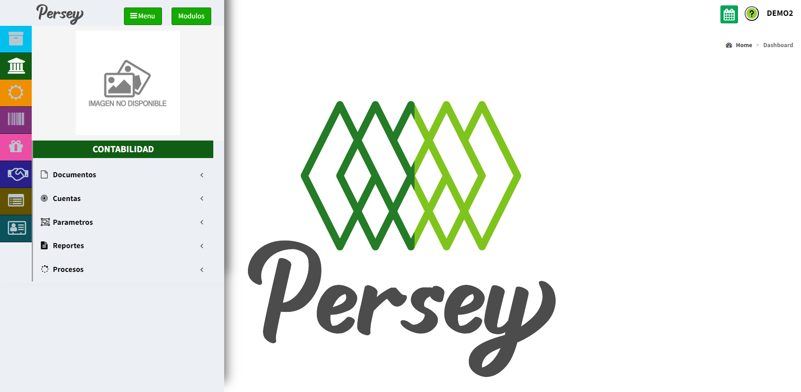

En el menú lateral izquierdo va a encontrar todas las opciones que usted va a poder realizar en el aplicativo de Persey.
Aquí podras guiarte paso a paso para listar o crear un documento contable.
Dirijase en el menú a la opcion de DOCUMENTOS, luego puede selecionar la opción LISTAR o NUEVO.

Si selecciono la opcion LISTAR le cargara una pantalla donde le saldran los documentos contables que ya haya guardado y en la parte superior derecha le saldra la opcion de agregar nuevos
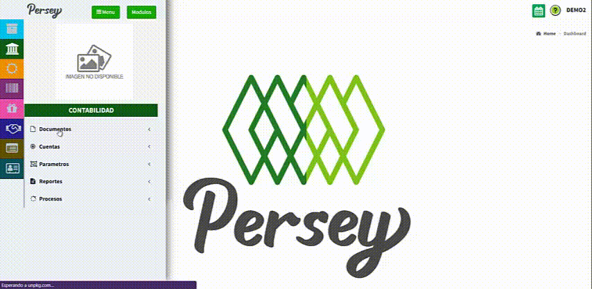Cuando haya pulsado "Nuevo" en cualquiera de los dos casos anteriores antes mencionados se le abrira una nueva venta con unos campos que debera rellenar. A continuación le diremos como debe diligencar el formato.


Listo, su documento contable a sido creado 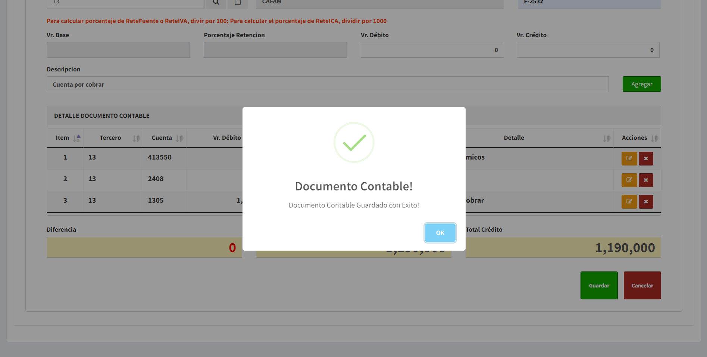
Para el ejemplo visual se realizo una venta (credito) la cual sera cobrada al tercero y este debera pagarla (debito)
Una vez realizado todo el paso 2, el documento contable quedara listado y para buscarlos se puede hacer de forma manual buscando de pagina en pagina o ingresando algun valor caracteristico de este en el recuadro de buscar. 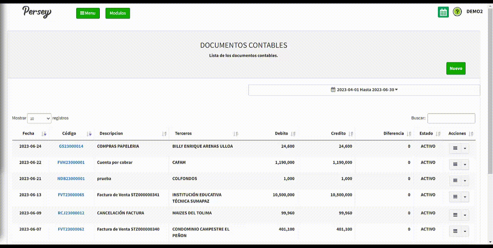
Tambien se cuenta con filtros para mostrar cierta cantidad de registros por pagina o establecer un periodo de tiempo de los cuales se quiera ver
los registros.

El plan único de cuentas está compuesto por un catálogo de cuentas con la descripción y ordenamiento dinámico para la aplicación de las mismas, las cuales deben observarse en el registro contable de todas las operaciones o transacciones económicas 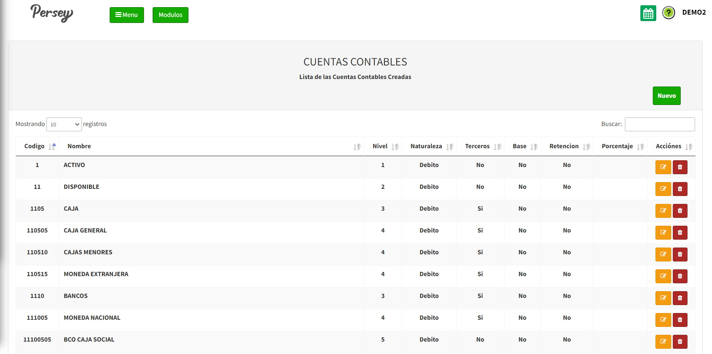
Para agregar una cuenta contable a su empresa debe darle en el boton que dice "NUEVO". Debe diligenciar el formulario con los campos correspondientes de izquierda a derecha, los campos que tienen un asterisco rojo son obligatorios. Cuando complete el formualario debe darle click en el boton que dice "GUARDAR"
Nota: el nivel hace referencia a la cantidad de numeros que se asignan en el codigo y este se autocompletara una vez hayamos establecido el codigo
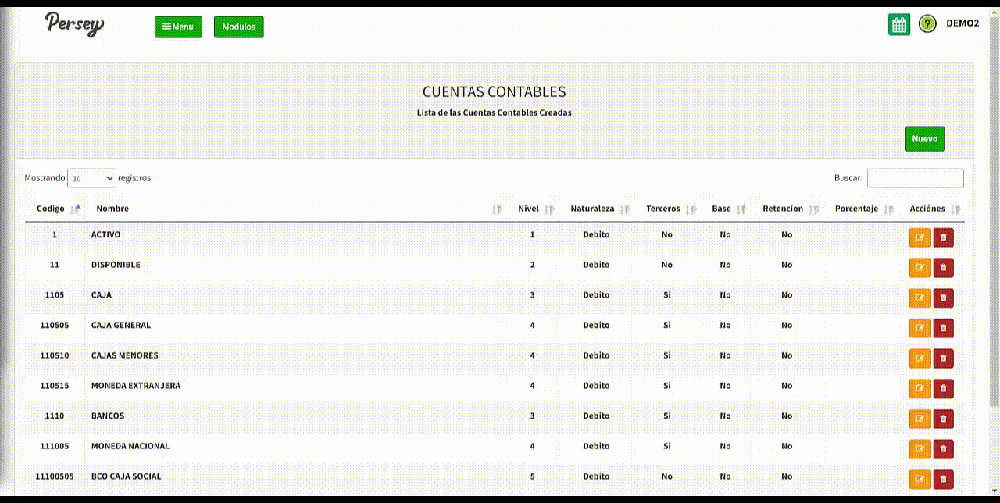Es de bien saber, que usted tambien tendrá la posibilidad de editar o eliminar una cuenta contable como se observa en el video.
Aquí podras guiarte paso a paso como crear grupos contables, su asignacion, formas de pago y sobre los periodos contables.
Dirijase hacia la sección de Parametros y elija la opción de Grupos Contables. Alli vera en la parte superior izquierda un boton que dice NUEVO al cual debera darle click para ingresar y crear un nuevo grupo contable.
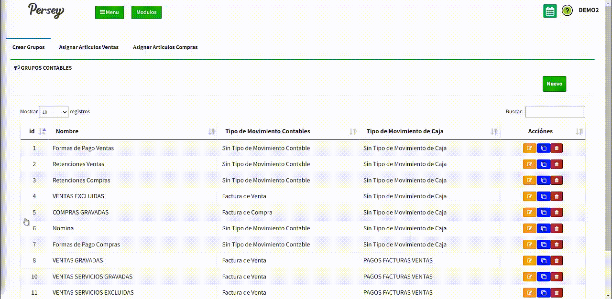Una vez realizado el paso anterior, se le abrira una nueva pestaña y debera rellenar todos los espacios obligatirios que son los
que tienen un asterisco rojo.

Para finalizar, al igual que en las otras secciones, esta tambien podra 1. Filtrar el numero de registros que quiere ver por pagina, 2. Buscar ingresando un valor en caracteristico en la barra de buscar, 3. Editar, copiar o eliminar un registro y 4. Desplazarse entre paginas. 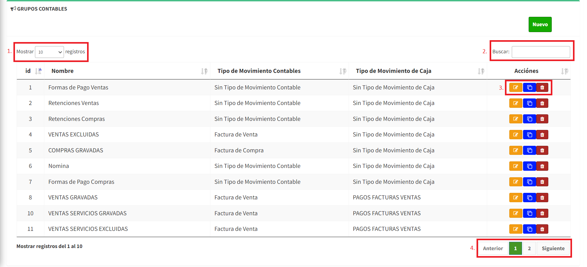
Esta opcion le permite asignar a cada uno de los articulos el grupo contable para su contabilizacion automatica.
Este apartado cuenta con diversas opciones como lo son 1. Seleccionar todos los elementos o quitar su seleccion, 2. Filtros para facilitar la busqueda y 3. Un boton para limpiar todos los filtros.
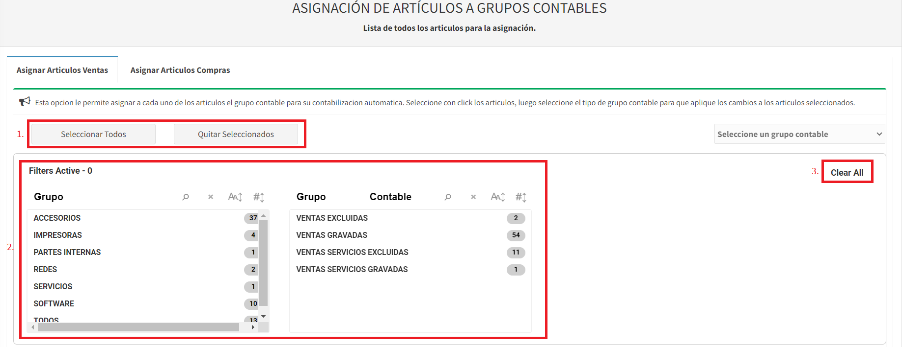Dirijase hacia la sección de Parametros y elija la opción de Periodo Contable. Alli vera en la parte superior izquierda un boton que dice NUEVO al cual debera darle click para ingresar y crear un nuevo periodo contable. 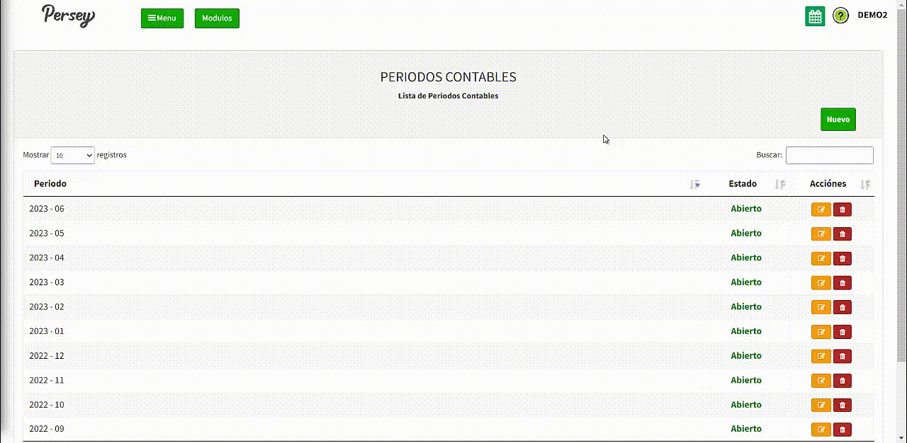
Aquí podras guiarte paso a paso ver los reportes de ventas, compras o reportes contables.
Dirijase en el menú a la opcion de Reportes, luego la opcion Ventas o Compras
La pagina le cargara una nueva pestaña donde le saldra una lista de los reportes; alli escogera la opción sobre la cual necesite el reporte.
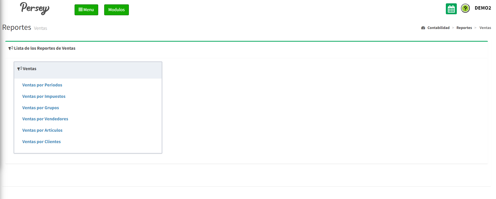Una vez seleccionada una opción de la lista se le abrira una nueva pestaña donde se le mostrara de acuerdo al talonario en un rango de fechas establecido. Recuerde que las Notas Credito se expresan en valores negativos y estaran resaltadas en rojo.

En el video se muestra como es el ejemplo para los reportes de ventas, pero para el caso del compras es el mismo proceso.
Nota: No olvide que usted puede ver en PDF o en un documento EXCEL los reportes
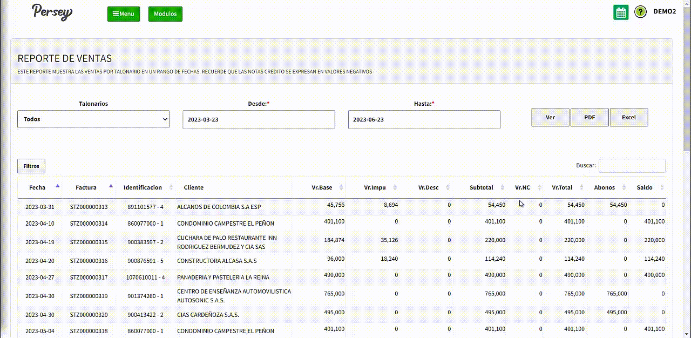Dirijase en el menú a la opcion de Reportes, luego la opcion Contables
La pagina le cargara una nueva pestaña donde le saldran varias listas de los reportes; alli escogera la opción sobre la cual necesite el reporte.
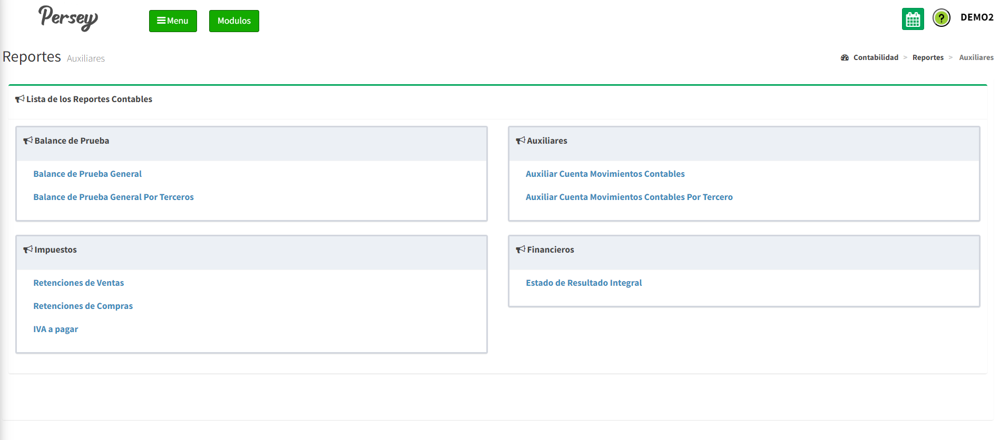Una vez seleccionada una opción de la lista se le abrira una nueva pestaña donde se le mostraras unas casillas las cuales debera diligenciar y que con un rango de cuentas y la seleccion de los periodos contables puede generar el balance de prueba general de la empresa.

Nota: No olvide que usted puede ver en PDF o en un documento EXCEL los reportes
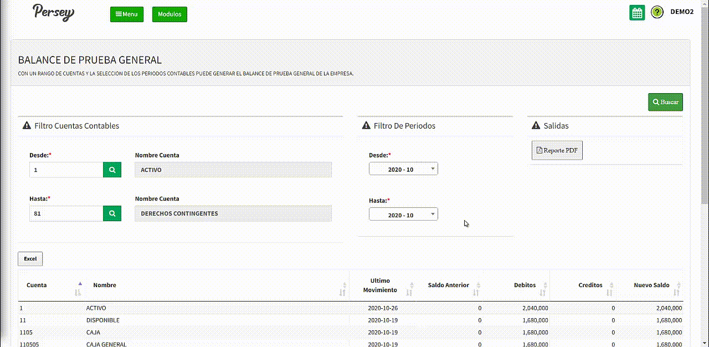